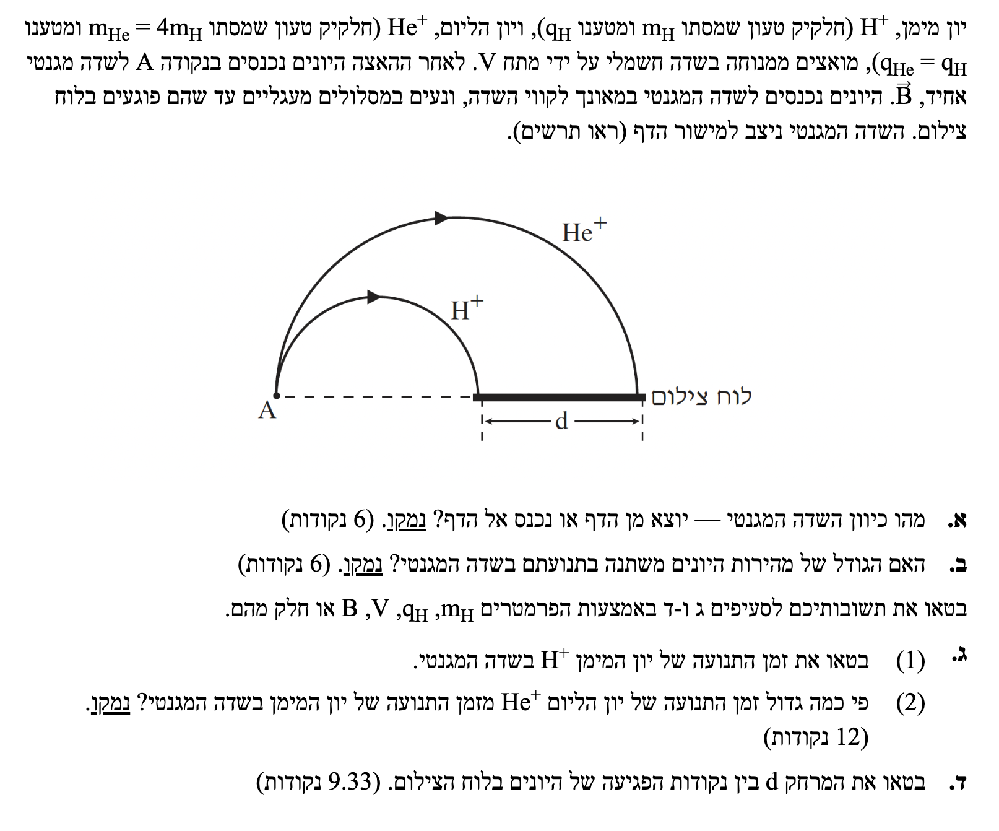
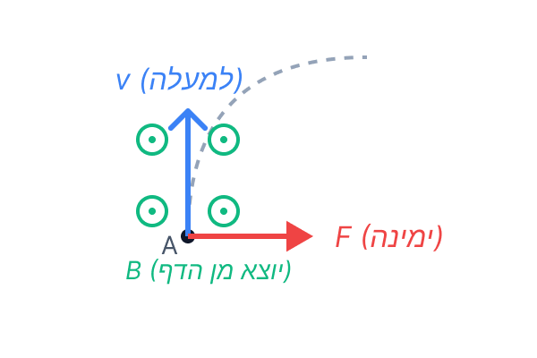

תנועת חלקיקים טעונים
בשאלה זו אנו חוקרים את תנועתם של שני יונים חיוביים (מימן והליום) בתוך שדה חשמלי מאיץ ולאחריו בתוך שדה מגנטי אחיד.
השאלה משלבת את חוק שימור האנרגיה יחד עם כוחות מגנטיים (כוח לורנץ) ותנועה מעגלית קצובה. בואו נפרק את זה צעד אחר צעד!

את כיוון השדה המגנטי האחיד \( \vec{B} \) (האם הוא נכנס אל הדף או יוצא מן הדף).
אנו מסתמכים על כוח לורנץ הפועל על מטען נע בשדה מגנטי, המחושב לפי כלל מפורסם:
כלל יד ימין (Right Hand Rule) \( \vec{F} = q\vec{v} \times \vec{B} \)בתנועה מעגלית, שקול הכוחות (וכאן זה רק הכוח המגנטי) חייב להצביע אל עבר מרכז המעגל.
בנקודה A, מהירות החלקיק \( \vec{v} \) מכוונת למעלה. מכיוון שהחלקיק מתחיל לנוע במעגל (בכיוון השעון) שמרכזו נמצא מימין לנקודת הכניסה, הכוח המגנטי \( \vec{F}_B \) חייב להיות מכוון ימינה.

נפעיל את כלל יד ימין:
1. נכוון את האגודל של יד ימין בכיוון המהירות \( \vec{v} \) (למעלה).
2. כף היד (כיוון הדחיפה של הכוח) פונה ימינה (אל עבר מרכז המעגל).
3. במצב זה, כדי שהאגודל יפנה למעלה וכף היד ימינה, האצבעות (המייצגות את השדה המגנטי) חייבות להצביע אלינו, מחוץ לדף.
תשובה סופית סעיף א': כיוון השדה המגנטי הוא יוצא מן הדף.
האם גודל מהירות היונים משתנה במהלך תנועתם בשדה המגנטי? נדרש נימוק.
אנו יודעים מעקרונות המגנטיות כי הכוח המגנטי תמיד ניצב (מאונך) לוקטור המהירות של החלקיק: \( \vec{F}_B \perp \vec{v} \).
מכיוון שהכוח המגנטי הפועל על החלקיק ניצב בכל רגע ורגע לכיוון התנועה (וקטור המהירות), הזווית בין הכוח להעתק היא תמיד \( 90^\circ \).
נחשב את העבודה שמבצע השדה המגנטי:
מכיוון שהעבודה הכוללת הפועלת על הגוף (בהיעדר כוחות אחרים) שווה לאפס, לפי משפט עבודה ואנרגיה, השינוי באנרגיה הקינטית הוא אפס:
מכיוון שהאנרגיה הקינטית נשמרת קבועה, והמסה \( m \) קבועה, נובע מכך שגודל המהירות \( v \) נשאר קבוע.
תשובה סופית סעיף ב': גודל מהירות היונים אינו משתנה (נשאר קבוע). הכוח המגנטי ניצב לכיוון התנועה ואינו משנה את האנרגיה הקינטית.
לכתוב ביטוי לזמן התנועה \( t_H \) של יון המימן בשדה המגנטי באמצעות הפרמטרים הנתונים.
ראשית, נרשום את משוואת הכוחות בציר הרדיאלי. הכוח היחיד שפועל הוא הכוח המגנטי:
נצמצם ב-\( v \) (מותר כי הוא אינו אפס) ונבודד את היחס \( \frac{R}{v} \):
כעת נשתמש בנוסחת המהירות בתנועה מעגלית קצובה כדי לבטא את זמן המחזור \( T \):
נציב את היחס שמצאנו ממשוואת הכוחות לתוך הנוסחה של זמן המחזור:
זמן מחזור שלם (\( T \)) הוא הזמן שלוקח לחלקיק להשלים מעגל מלא. מכיוון שהחלקיק שלנו מתווה בדיוק חצי מעגל, זמן התנועה שלו יהיה מחצית מזמן המחזור:
תשובה סופית סעיף ג' (1): הזמן הוא \( t_H = \frac{\pi m_H}{q_H B} \).
פי כמה גדול זמן התנועה של יון ההליום \( t_{He} \) מזמן התנועה של יון המימן \( t_H \), בתוספת נימוק.
בסעיף זה אין שימוש בנוסחאות חדשות מדף הנוסחאות. אנו נסתמך ישירות על הביטוי המפותח לזמן התנועה שמצאנו בסעיף ג' (1).
נשתמש בביטוי שפיתחנו בסעיף הקודם (\( t = \frac{\pi m}{qB} \)) ונכתוב את ביטוי הזמן עבור יון ההליום, תוך הצבת הנתונים הספציפיים שלו:
נציב את הקשרים הנתונים בשאלה (\( m_{He} = 4m_H \) ו- \( q_{He} = q_H \)):
מכיוון שהביטוי בתוך הסוגריים הוא בדיוק \( t_H \), נקבל:
תשובה סופית סעיף ג' (2): הזמן גדול פי 4 מזמן התנועה של המימן.
לבטא את המרחק \( d \) באמצעות הפרמטרים הנתונים.
היונים מואצים ממנוחה. הכוח היחיד שמבצע עבודה על היונים הוא הכוח החשמלי, ולכן העבודה הכוללת שווה לעבודתו (\( W_{\text{total}} = W_{elec} \)). נציב במשפט עבודה-אנרגיה:
החלקיק נע בתנועה מעגלית. נרשום את משוואת הכוחות בציר הרדיאלי לפי החוק השני של ניוטון:
נצמצם ב-\( v \) ונבודד את הרדיוס \( R \):
כעת, נציב את המהירות \( v \) שמצאנו בשלב 1 לתוך הביטוי שקיבלנו לרדיוס:
על פי השרטוט, כל יון פוגע בלוח במרחק של קוטר שלם מנקודת הכניסה A (כלומר \( 2R \)). המרחק \( d \) הוא ההפרש בין נקודת הפגיעה של ההליום למימן, ולכן: \( d = 2R_{He} - 2R_H \).
נחשב את הרדיוס של יון המימן:
נחשב את הרדיוס של יון ההליום. נציב \( m_{He}=4m_H \) ו- \( q_{He}=q_H \) ונוציא 4 מהשורש:
המרחק \( d \) הוא ההפרש בין הקטרים:
נציב בחזרה את הביטוי עבור \( R_H \) ונקבל:
תשובה סופית סעיף ד': \( d = \frac{2}{B} \sqrt{\frac{2m_H V}{q_H}} \).